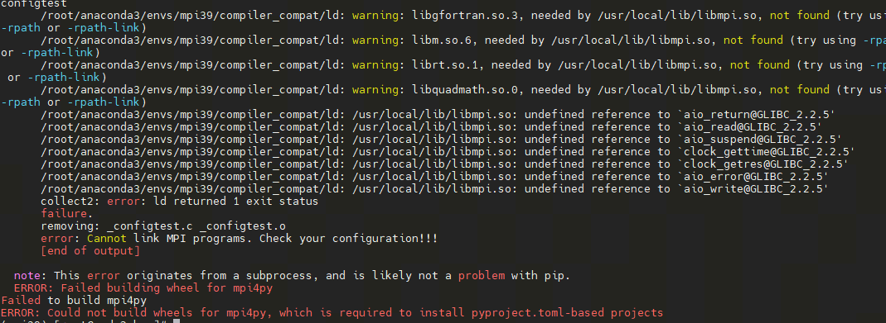

VQNet Naive Distributed Computing Module¶
Environment deployment¶
The following describes the VQNet deployment of the environment under the Linux system based on CPU and GPU distributed computing, respectively.
MPI Installation¶
MPI is a common library for inter-CPU communication, and the distributed computing function of CPU in VQNet is realized based on MPI, and the following section describes how to install MPI in Linux system (at present, the distributed computing function based on CPU is realized only on Linux).
Detect if gcc, gfortran compilers are installed.
which gcc
which gfortran
When the paths to gcc and gfortran are shown, you can proceed to the next step of installation, if you do not have the corresponding compilers, please install the compilers first. When the compilers have been checked, use the wget command to download them.
wget http://www.mpich.org/static/downloads/3.3.2/mpich-3.3.2.tar.gz
tar -zxvf mpich-3.3.2.tar.gz
cd mpich-3.3.2
./configure --prefix=/usr/local/mpich
make
make install
Finish compiling and installing mpich and configure its environment variables.
vim ~/.bashrc
# At the bottom of the document, add
export PATH="/usr/local/mpich/bin:$PATH"
After saving and exiting, use source to execute
source ~/.bashrc
Use which to verify that the environment variables are configured correctly. If the path is displayed, the installation has completed successfully.
In addition, you can install mpi4py via pip install, if you get the following error

To solve the problem of incompatibility between mpi4py and python versions, you can do the following
# Staging the compiler for the current python environment with the following code
pushd /root/anaconda3/envs/$CONDA_DEFAULT_ENV/compiler_compat && mv ld ld.bak && popd
# Re-installation
pip install mpi4py
# reduction
pushd /root/anaconda3/envs/$CONDA_DEFAULT_ENV/compiler_compat && mv ld.bak ld && popd
NCCL Installation¶
NCCL is a common library for communication between GPUs, and the distributed computing function of GPUs in VQNet is realized based on NCCL, and the following introduces how to install NCCL in Linux system (at present, the distributed computing function based on GPUs is realized only on Linux). This section requires MPI support, so the MPI environment needs to be deployed as well.
Pull the NCCL repositories from github to local
git clone https://github.com/NVIDIA/nccl.git
Go to the nccl root directory and compile
cd nccl
make -j src.build
If cuda is not installed in the default path /usr/local/cuda, you need to define the path to CUDA, and compile it using the following code
make src.build CUDA_HOME=<path to cuda install>
And you can specify the installation directory according to BUILDDIR, the command is as follows
make src.build CUDA_HOME=<path to cuda install> BUILDDIR=/usr/local/nccl
Add configuration to the .bashrc file after installation is complete
vim ~/.bashrc
# Add at the bottom
export LD_LIBRARY_PATH=$LD_LIBRARY_PATH:/usr/local/nccl/lib
export PATH=$PATH:/usr/local/nccl/bin
After saving, execute
source ~/.bashrc
It can be verified with nccl-test
git clone https://github.com/NVIDIA/nccl-tests.git
cd nccl-tests
make -j12 CUDA_HOME=/usr/local/cuda
./build/all_reduce_perf -b 8 -e 256M -f 2 -g 1
Inter-node communication environment deployment¶
To implement distributed computing on multiple nodes, first you need to ensure the consistency of the mpich environment and the python environment on multiple nodes, and secondly, you need to set up secret-free communication between nodes. .. code-block:
# Execute on each node ssh-keygen # After that, keep entering to generate a public key (id_rsa.pub) and a private key (id_rsa) in the .ssh folder # Add the public keys of both of its other nodes to the authorized_keys file of the first node. # Then pass the authorized_keys file from the first node to the other two nodes to achieve password-free communication between the nodes. # Execute on child node node1 cat ~/.ssh/id_dsa.pub >> node0:~/.ssh/authorized_keys # Execute on child node node2 cat ~/.ssh/id_dsa.pub >> node0:~/.ssh/authorized_keys # After deleting the authorized_keys files on node1 and node2, copy the authorized_keys file on node0 to the other two nodes. scp ~/.ssh/authorized_keys node1:~/.ssh/authorized_keys scp ~/.ssh/authorized_keys node2:~/.ssh/authorized_keys # After deleting the authorized_keys files on node1 and node2, copy the authorized_keys file on node0 to the other two nodes.In addition to this, it is also a good idea to set up a shared directory so that when files in the shared directory are changed, files in different nodes are also changed, preventing files in different nodes from being out of sync when the model is run on multiple nodes. The shared directory is implemented using nfs-utils and rpcbind.
# Installation of software packages yum -y install nfs* rpcbind # Edit the configuration file on the master node vim /etc/exports /data/mpi *(rw,sync,no_all_squash,no_subtree_check) # Start the service on the master node systemctl start rpcbind systemctl start nfs # Mount the directory to be shared on all child nodes node1,node2. mount node1:/data/mpi/ /data/mpi mount node2:/data/mpi/ /data/mpi
Distributed launch¶
Using the Distributed Computing Interface, started by the vqnetrun command, the parameters of vqnetrun are described.
n, np¶
The vqnetrun interface allows you to control the number of processes started with the -n, -np parameters, as shown in the following example.
Example:
from pyvqnet.distributed import CommController Comm_OP = CommController("mpi") # init mpi controller rank = Comm_OP.getRank() size = Comm_OP.getSize() print(f"rank: {rank}, size {size}") # vqnetrun -n 2 python test.py # vqnetrun -np 2 python test.py
H, hosts¶
The vqnetrun interface allows you to specify nodes and process assignments for cross-node execution via the -H, --hosts interfaces (you must configure the node’s environment successfully to execute in the same environment under the same path when running across nodes), with the following execution example.
Example:
from pyvqnet.distributed import CommController, get_host_name Comm_OP = CommController("mpi") # init mpi controller rank = Comm_OP.getRank() size = Comm_OP.getSize() print(f"rank: {rank}, size {size}") print(f"LocalRank {Comm_OP.getLocalRank()} hosts name {get_host_name()}") # vqnetrun -np 4 -H node0:1,node2:1 python test.py # vqnetrun -np 4 --hosts node0:1,node2:1 python test.py
hostfile, f, hostfile¶
The vqnetrun interface allows you to specify nodes and process assignments across nodes by specifying a hosts file (when running across nodes, you must configure the node’s environment successfully, executing in the same environment and under the same path), with the command line arguments -hostfile, -f, and --hostfile.
Each line within the file must be formatted as <hostname> slots=<slots> as;
node0 slots=1
node2 slots=1
A sample implementation is as follows
Example:
from pyvqnet.distributed import CommController, get_host_name Comm_OP = CommController("mpi") # init mpi controller rank = Comm_OP.getRank() size = Comm_OP.getSize() print(f"rank: {rank}, size {size}") print(f"LocalRank {Comm_OP.getLocalRank()} hosts name {get_host_name()}") # vqnetrun -np 4 -f hosts python test.py # vqnetrun -np 4 -hostfile hosts python test.py # vqnetrun -np 4 --hostfile hosts python test.py
output-filename¶
The vqnetrun interface allows you to save the output to a specified file with the command line parameter --output-filename.
A sample implementation is as follows:
Example:
from pyvqnet.distributed import CommController, get_host_name Comm_OP = CommController("mpi") # init mpi controller rank = Comm_OP.getRank() size = Comm_OP.getSize() print(f"rank: {rank}, size {size}") print(f"LocalRank {Comm_OP.getLocalRank()} hosts name {get_host_name()}") # vqnetrun -np 4 --hostfile hosts --output-filename output python test.py
verbose¶
The vqnetrun interface can be used with the command line parameter --verbose to instrument inter-node communication and additionally output the results of the instrumentation.
A sample implementation is as follows
Example:
from pyvqnet.distributed import CommController, get_host_name Comm_OP = CommController("mpi") # init mpi controller rank = Comm_OP.getRank() size = Comm_OP.getSize() print(f"rank: {rank}, size {size}") print(f"LocalRank {Comm_OP.getLocalRank()} hosts name {get_host_name()}") # vqnetrun -np 4 --hostfile hosts --verbose python test.py
start-timeout¶
The vqnetrun interface can be used with the command line parameter -start-timeout to specify that all checks are performed and the process is started before the timeout. The default value is 30 seconds.
A sample implementation is as follows
Example:
from pyvqnet.distributed import CommController, get_host_name Comm_OP = CommController("mpi") # init mpi controller rank = Comm_OP.getRank() size = Comm_OP.getSize() print(f"rank: {rank}, size {size}") print(f"LocalRank {Comm_OP.getLocalRank()} hosts name {get_host_name()}") # vqnetrun -np 4 --start-timeout 10 python test.py
h¶
The vqnetrun interface can output all parameters supported by vqnetrun and a detailed description of the parameters using this flag.
A sample implementation is as follows
# vqnetrun -h
CommController¶
Distributed computing is used to control the data communication of different processes under cpu and gpu, generate different controllers for cpu (mpi) and gpu (nccl), and call the communication method to complete the communication and synchronization of data between different processes.
__init__¶
- class pyvqnet.distributed.ControlComm.CommController(backend, rank=None, world_size=None)¶
CommController is used to control the controller of data communication under cpu and gpu, by setting the parameter backend to generate the controller for cpu(mpi) and gpu(nccl). (Currently, the distributed computing function only supports the use of linux operating system system )
- Parameters:
backend – used to generate the data communication controller for cpu or gpu.
rank – This parameter is only useful in non-pyvqnet backends, the default value is: None.
world_size – This parameter is only useful in non-pyvqnet backends, the default value is: None.
- Returns:
CommController instance.
Examples:
from pyvqnet.distributed import CommController Comm_OP = CommController("nccl") # init nccl controller # Comm_OP = CommController("mpi") # init mpi controller
- getRank()¶
Used to get the process number of the current process.
- Returns:
Returns the process number of the current process.
Examples:
from pyvqnet.distributed import CommController Comm_OP = CommController("nccl") # init nccl controller Comm_OP.getRank()
- getSize()¶
Used to get the total number of processes started.
- Returns:
Returns the total number of processes.
Examples:
from pyvqnet.distributed import CommController Comm_OP = CommController("nccl") # init nccl controller Comm_OP.getSize() # vqnetrun -n 2 python test.py # 2
- getLocalRank()¶
Used to get the current process number on the current machine.
- Returns:
The current process number on the current machine.
Examples:
from pyvqnet.distributed import CommController Comm_OP = CommController("nccl") # init nccl controller Comm_OP.getLocalRank() # vqnetrun -n 2 python test.py
- split_group(rankL)¶
Divide multiple communication groups according to the process number list set by the input parameter.
- Parameters:
rankL – A list of process group ranks.
- Returns:
When the backend is nccl, a tuple of process group ranks is returned. When the backend is mpi, returns a list whose length is equal to the number of groups; each element is a tuple (comm, rank), where comm is the MPI communicator of the group and rank is the sequence number within the group..
Examples:
from pyvqnet.distributed import CommController,get_rank,get_local_rank from pyvqnet.tensor import tensor import numpy as np Comm_OP = CommController("mpi") groups = Comm_OP.split_group([[0, 1],[2,3]]) print(groups) #[[<mpi4py.MPI.Intracomm object at 0x7f53691f3230>, [0, 3]], [<mpi4py.MPI.Intracomm object at 0x7f53691f3010>, [2, 1]]]
- barrier()¶
Synchronization.
- Returns:
Synchronization.
Examples:
from pyvqnet.distributed import CommController Comm_OP = CommController("nccl") Comm_OP.barrier()
- get_device_num()¶
Used to get the number of graphics cards on the current node, (only supported on gpu).
- Returns:
Returns the number of graphics cards on the current node.
Examples:
from pyvqnet.distributed import CommController Comm_OP = CommController("nccl") Comm_OP.get_device_num() # python test.py
- allreduce(tensor, c_op='avg')¶
Supports allreduce communication of data.
- Parameters:
tensor – Input data.
c_op – Calculation.
Examples:
from pyvqnet.distributed import CommController from pyvqnet.tensor import tensor import numpy as np Comm_OP = CommController("mpi") num = tensor.to_tensor(np.random.rand(1, 5)) print(f"rank {Comm_OP.getRank()} {num}") Comm_OP.allreduce(num, "sum") print(f"rank {Comm_OP.getRank()} {num}") # vqnetrun -n 2 python test.py
- reduce(tensor, root=0, c_op='avg')¶
Supports reduce communication of data.
- Parameters:
tensor – input.
root – Specifies the node to which the data is returned.
c_op – Calculation.
Examples:
from pyvqnet.distributed import CommController from pyvqnet.tensor import tensor import numpy as np Comm_OP = CommController("mpi") num = tensor.to_tensor(np.random.rand(1, 5)) print(f"rank {Comm_OP.getRank()} {num}") Comm_OP.reduce(num, 1) print(f"rank {Comm_OP.getRank()} {num}") # vqnetrun -n 2 python test.py
- broadcast(tensor, root=0)¶
Broadcasts data on the specified process root to all processes.
- Parameters:
tensor – input.
root – Specifies node.
Examples:
from pyvqnet.distributed import CommController from pyvqnet.tensor import tensor import numpy as np Comm_OP = CommController("mpi") num = tensor.to_tensor(np.random.rand(1, 5)) print(f"rank {Comm_OP.getRank()} {num}") Comm_OP.broadcast(num, 1) print(f"rank {Comm_OP.getRank()} {num}") # vqnetrun -n 2 python test.py
- allgather(tensor)¶
Allgather the data on all processes together.
- Parameters:
tensor – input.
Examples:
from pyvqnet.distributed import CommController from pyvqnet.tensor import tensor import numpy as np Comm_OP = CommController("mpi") num = tensor.to_tensor(np.random.rand(1, 5)) print(f"rank {Comm_OP.getRank()} {num}") num = Comm_OP.allgather(num) print(f"rank {Comm_OP.getRank()} {num}") # vqnetrun -n 2 python test.py
- send(tensor, dest)¶
p2p communication interface.
- Parameters:
tensor – input.
dest – Destination process.
Examples:
from pyvqnet.distributed import CommController,get_rank from pyvqnet.tensor import tensor import numpy as np Comm_OP = CommController("mpi") num = tensor.to_tensor(np.random.rand(1, 5)) recv = tensor.zeros_like(num) if get_rank() == 0: Comm_OP.send(num, 1) elif get_rank() == 1: Comm_OP.recv(recv, 0) print(f"rank {Comm_OP.getRank()} {num}") print(f"rank {Comm_OP.getRank()} {recv}") # vqnetrun -n 2 python test.py
- recv(tensor, source)¶
p2p communication interface.
- Parameters:
tensor – input.
source – Acceptance process.
Examples:
from pyvqnet.distributed import CommController,get_rank from pyvqnet.tensor import tensor import numpy as np Comm_OP = CommController("mpi") num = tensor.to_tensor(np.random.rand(1, 5)) recv = tensor.zeros_like(num) if get_rank() == 0: Comm_OP.send(num, 1) elif get_rank() == 1: Comm_OP.recv(recv, 0) print(f"rank {Comm_OP.getRank()} {num}") print(f"rank {Comm_OP.getRank()} {recv}") # vqnetrun -n 2 python test.py
- allreduce_group(tensor, c_op='avg', group=None)¶
The group allreduce communication interface.
- Parameters:
tensor – input.
c_op – Calculation.
group – Communication group. When using the mpi backend, enter the group generated by init_group or split_group corresponding to the communication group. When using the nccl backend, enter the group number generated by split_group.
Examples:
from pyvqnet.distributed import CommController,get_rank,get_local_rank from pyvqnet.tensor import tensor import numpy as np Comm_OP = CommController("nccl") groups = Comm_OP.split_group([[0, 1]]) complex_data = tensor.QTensor([3+1j, 2, 1 + get_rank()],dtype=8).reshape((3,1)).toGPU(1000+ get_local_rank()) print(f"allreduce_group before rank {get_rank()}: {complex_data}") Comm_OP.allreduce_group(complex_data, c_op="sum",group = groups[0]) print(f"allreduce_group after rank {get_rank()}: {complex_data}") # vqnetrun -n 2 python test.py
- reduce_group(tensor, root=0, c_op='avg', group=None)¶
Intra-group reduce communication interface.
- Parameters:
tensor – Input.
root – Specify the process number.
c_op – Calculation.
group – Communication group. When using the mpi backend, enter the group generated by init_group or split_group corresponding to the communication group. When using the nccl backend, enter the group number generated by split_group.
Examples:
from pyvqnet.distributed import CommController,get_rank,get_local_rank from pyvqnet.tensor import tensor import numpy as np Comm_OP = CommController("nccl") groups = Comm_OP.split_group([[0, 1]]) complex_data = tensor.QTensor([3+1j, 2, 1 + get_rank()],dtype=8).reshape((3,1)).toGPU(1000+ get_local_rank()) print(f"reduce_group before rank {get_rank()}: {complex_data}") Comm_OP.reduce_group(complex_data, c_op="sum",group = groups[0]) print(f"reduce_group after rank {get_rank()}: {complex_data}") # vqnetrun -n 2 python test.py
- broadcast_group(tensor, root=0, group=None)¶
Intra-group broadcast communication interface.
- Parameters:
tensor – Input.
root – Specify the process number to broadcast from, default:0.
group – Communication group. When using the mpi backend, enter the group generated by init_group or split_group corresponding to the communication group. When using the nccl backend, enter the group number generated by split_group.
Examples:
from pyvqnet.distributed import CommController,get_rank,get_local_rank from pyvqnet.tensor import tensor import numpy as np Comm_OP = CommController("nccl") groups = Comm_OP.split_group([[0, 1]]) complex_data = tensor.QTensor([3+1j, 2, 1 + get_rank()],dtype=8).reshape((3,1)).toGPU(1000+ get_local_rank()) print(f"broadcast_group before rank {get_rank()}: {complex_data}") Comm_OP.broadcast_group(complex_data,group = groups[0]) Comm_OP.barrier() print(f"broadcast_group after rank {get_rank()}: {complex_data}") # vqnetrun -n 2 python test.py
- allgather_group(tensor, group=None)¶
The group allgather communication interface.
- Parameters:
tensor – Input.
group – Communication group. When using the mpi backend, enter the group generated by init_group or split_group corresponding to the communication group. When using the nccl backend, enter the group number generated by split_group.
Examples:
from pyvqnet.distributed import CommController,get_rank,get_local_rank from pyvqnet.tensor import tensor import numpy as np Comm_OP = CommController("nccl") groups = Comm_OP.split_group([[0, 1]]) complex_data = tensor.QTensor([3+1j, 2, 1 + get_rank()],dtype=8).reshape((3,1)).toGPU(1000+ get_local_rank()) print(f"allgather_group before rank {get_rank()}: {complex_data}") complex_data = Comm_OP.allgather_group(complex_data,group = groups[0]) print(f"allgather_group after rank {get_rank()}: {complex_data}") # vqnetrun -n 2 python test.py
- grad_allreduce(optimizer)¶
Update the gradient of the parameters in the optimizer with allreduce.
- Parameters:
optimizer – optimizer.
Examples:
from pyvqnet.distributed import CommController,get_rank,get_local_rank from pyvqnet.tensor import tensor from pyvqnet.nn.module import Module from pyvqnet.nn.linear import Linear from pyvqnet.nn.loss import MeanSquaredError from pyvqnet.optim import Adam from pyvqnet.nn import activation as F import numpy as np Comm_OP = CommController("nccl") class Net(Module): def __init__(self): super(Net, self).__init__() self.fc = Linear(input_channels=5, output_channels=1) def forward(self, x): x = F.ReLu()(self.fc(x)) return x model = Net().toGPU(1000+ get_local_rank()) opti = Adam(model.parameters(), lr=0.01) actual = tensor.QTensor([1,1,1,1,1,0,0,0,0,0],dtype=6).reshape((10,1)).toGPU(1000+ get_local_rank()) x = tensor.randn((10, 5)).toGPU(1000+ get_local_rank()) for i in range(10): opti.zero_grad() model.train() result = model(x) loss = MeanSquaredError()(actual, result) loss.backward() # print(f"rank {get_rank()} grad is {model.parameters()[0].grad} para {model.parameters()[0]}") Comm_OP.grad_allreduce(opti) # print(Comm_OP._allgather(model.parameters()[0])) if get_rank() == 0 : print(f"rank {get_rank()} grad is {model.parameters()[0].grad} para {model.parameters()[0]} after") opti.step() # vqnetrun -n 2 python test.py
- param_allreduce(model)¶
Update the parameters in the model in an allreduce manner.
- Parameters:
model – Model.
Examples:
from pyvqnet.distributed import CommController,get_rank,get_local_rank from pyvqnet.tensor import tensor from pyvqnet.nn.module import Module from pyvqnet.nn.linear import Linear from pyvqnet.nn import activation as F import numpy as np Comm_OP = CommController("nccl") class Net(Module): def __init__(self): super(Net, self).__init__() self.fc = Linear(input_channels=5, output_channels=1) def forward(self, x): x = F.ReLu()(self.fc(x)) return x model = Net().toGPU(1000+ get_local_rank()) print(f"rank {get_rank()} parameters is {model.parameters()}") Comm_OP.param_allreduce(model) if get_rank() == 0: print(model.parameters())
- broadcast_model_params(model, root=0)¶
Broadcasts the model parameters on the specified process number.
- Parameters:
model – Models.
root – Specify the process number.
Examples:
from pyvqnet.distributed import CommController,get_rank,get_local_rank from pyvqnet.tensor import tensor from pyvqnet.nn.module import Module from pyvqnet.nn.linear import Linear from pyvqnet.nn import activation as F import numpy as np Comm_OP = CommController("nccl") class Net(Module): def __init__(self): super(Net, self).__init__() self.fc = Linear(input_channels=5, output_channels=1) def forward(self, x): x = F.ReLu()(self.fc(x)) return x model = Net().toGPU(1000+ get_local_rank()) print(f"bcast before rank {get_rank()}:{model.parameters()}") Comm_OP.broadcast_model_params(model, 0) # model = model print(f"bcast after rank {get_rank()}: {model.parameters()}")
- nccl_async_all_gather( output, input, group=None, async_op=False):
Use NCCL for asynchronous or synchronous all_gather on GPU data.
- Parameters:
output – QTensor - The target QTensor for all_gather result.
input – QTensor - The QTensor to be gathered.
group – Communication process group, group is a tuple containing group indices. Default: None, no group is used.
async_op – Whether this operation is asynchronous, default: False.
- Returns:
Work - An asynchronous communication handle. Use wait() to wait for this operation to complete.
Examples:
from pyvqnet import tensor import pyvqnet from pyvqnet.distributed import CommController,get_rank,get_local_rank Comm_OP = CommController("nccl") complex_data = tensor.QTensor([3+1j, 2, 1 + get_rank()],dtype=8).reshape((3,1)).toGPU(1000+ get_local_rank()) out_data = tensor.empty([2,3,1],dtype=pyvqnet.kcomplex64).toGPU(pyvqnet.DEV_GPU_0+ get_local_rank()) work = Comm_OP.nccl_async_all_gather(out_data, complex_data, group = None,async_op=True) work.wait()
- nccl_async_all_reduce(tensor, c_op="avg",group=None, async_op=False):
Use NCCL for asynchronous or synchronous allreduce on GPU data.
- Parameters:
tensor – QTensor - The QTensor that needs to be reduced.
c_op – Computation method, can be “sum” or “avg”, default value is “avg”.
group – Communication process group, group is a tuple containing group indices. Default: None, no group is used.
async_op – Whether this operation is asynchronous, default: False.
- Returns:
Work - An asynchronous communication handle. Use wait() to wait for this operation to complete.
Examples:
import pyvqnet from pyvqnet.tensor import tensor from pyvqnet.distributed.ControlComm import CommController,get_local_rank Comm_OP = CommController("nccl") complex_data = tensor.ones([500,500],dtype=pyvqnet.kcomplex64).toGPU(pyvqnet.DEV_GPU_0 + get_local_rank()) work = Comm_OP.nccl_async_all_reduce(complex_data, "sum",group = None,async_op = True) work.wait()
- nccl_async_reduce( tensor_, dest, c_op="avg", group=None, async_op=False ):
Use NCCL for asynchronous or synchronous reduce on GPU data.
- Parameters:
tensor – QTensor - The QTensor that needs to be reduced.
dest – The destination rank of the reduced QTensor.
c_op – Computation method, can be “sum” or “avg”, default value is “avg”.
group – Communication process group, group is a tuple containing group indices. Default: None, no group is used.
async_op – Whether this operation is asynchronous, default: False.
- Returns:
Work - An asynchronous communication handle. Use wait() to wait for this operation to complete.
Examples:
from pyvqnet import tensor import pyvqnet from pyvqnet.distributed import CommController,get_rank,get_local_rank Comm_OP = CommController("nccl") complex_data = tensor.ones([500,500],dtype=pyvqnet.kcomplex64).toGPU(pyvqnet.DEV_GPU_0 + get_local_rank()) work = Comm_OP.nccl_async_reduce(complex_data, 0,"sum",group = None,async_op = True) work.wait()
- nccl_async_broadcast(tensor, src, group=None, async_op=False)¶
Use NCCL for asynchronous or synchronous broadcast on GPU data.
- Parameters:
tensor – QTensor - The QTensor that needs to be broadcast.
src – The source rank of the broadcast QTensor.
group – Communication process group, group is a tuple containing group indices. Default: None, no group is used.
async_op – Whether this operation is asynchronous, default: False.
- Returns:
Work - An asynchronous communication handle. Use wait() to wait for this operation to complete.
Examples:
import pyvqnet from pyvqnet.tensor import tensor from pyvqnet.distributed.ControlComm import CommController,get_local_rank Comm_OP = CommController("nccl") if get_local_rank() == 1: complex_data = tensor.ones([5,5],dtype=pyvqnet.kcomplex64).toGPU(pyvqnet.DEV_GPU_0+ get_local_rank()) else: complex_data = tensor.zeros([5,5],dtype=pyvqnet.kcomplex64).toGPU(pyvqnet.DEV_GPU_0+ get_local_rank()) work = Comm_OP.nccl_async_broadcast(complex_data, 1, group = None,async_op=True) work.wait()
- nccl_async_send( t, dest, async_op=False ):
Use NCCL for asynchronous or synchronous P2P send on GPU data.
- Parameters:
t – QTensor - The QTensor that needs to be sent.
dest – The destination rank to send the QTensor to.
async_op – Whether this operation is asynchronous, default: False.
- Returns:
Work - An asynchronous communication handle. Use wait() to wait for this operation to complete.
Examples:
import pyvqnet from pyvqnet.tensor import tensor from pyvqnet.distributed.ControlComm import CommController,get_local_rank Comm_OP = CommController("nccl") if get_local_rank() == 0: complex_data = tensor.ones([5000,5000],dtype=pyvqnet.kcomplex64).toGPU(pyvqnet.DEV_GPU_0+ get_local_rank())*10 else: complex_data = tensor.ones([5000,5000],dtype=pyvqnet.kcomplex64).toGPU(pyvqnet.DEV_GPU_0+ get_local_rank()) if get_local_rank() == 0: work = Comm_OP.nccl_async_send(complex_data, 1 ,True) else: work = Comm_OP.nccl_async_recv(complex_data, 0 ,True) work.wait()
- nccl_async_recv( t, src, async_op=False ):
Use NCCL for asynchronous or synchronous P2P receive on GPU data.
- Parameters:
t – QTensor - The QTensor that receives the data.
src – The source rank of the received QTensor.
async_op – Whether this operation is asynchronous, default: False.
- Returns:
Work - An asynchronous communication handle. Use wait() to wait for this operation to complete.
Examples:
import pyvqnet from pyvqnet.tensor import tensor from pyvqnet.distributed.ControlComm import CommController,get_local_rank Comm_OP = CommController("nccl") if get_local_rank() == 0: complex_data = tensor.ones([5000,5000],dtype=pyvqnet.kcomplex64).toGPU(pyvqnet.DEV_GPU_0+ get_local_rank())*10 else: complex_data = tensor.ones([5000,5000],dtype=pyvqnet.kcomplex64).toGPU(pyvqnet.DEV_GPU_0+ get_local_rank()) if get_local_rank() == 0: work = Comm_OP.nccl_async_send(complex_data, 1 ,True) else: work = Comm_OP.nccl_async_recv(complex_data, 0 ,True) work.wait()
split_data¶
In multi-process, use split_data to slice the data according to the number of processes and return the data on the corresponding process.
- pyvqnet.distributed.datasplit.split_data(x_train, y_train, shuffle=False)¶
Set parameters for distributed computation.
- param x_train:
np.array - training data.
- param y_train:
np.array - Training data labels.
- param shuffle:
bool - Whether to shuffle and then slice, default is False.
- return:
sliced training data and labels.
Example:
from pyvqnet.distributed import split_data import numpy as np x_train = np.random.randint(255, size = (100, 5)) y_train = np.random.randint(2, size = (100, 1)) x_train, y_train= split_data(x_train, y_train)
get_local_rank¶
Use get_local_rank to get the process number on the current machine.
- pyvqnet.distributed.ControlComm.get_local_rank()¶
Used to get the current process number on the current machine.
- Returns:
current process number on the current machine.
Example:
from pyvqnet.distributed.ControlComm import get_local_rank print(get_local_rank()) # vqnetrun -n 2 python test.py
get_rank¶
Use get_rank to get the process number on the current machine.
- pyvqnet.distributed.ControlComm.get_rank()¶
Used to get the process number of the current process.
- Returns:
the process number of the current process.
Example:
from pyvqnet.distributed.ControlComm import get_rank print(get_rank()) # vqnetrun -n 2 python test.py
init_group¶
Use init_group to initialise cpu-based process groups based on the given list of process numbers.
- pyvqnet.distributed.ControlComm.init_group(rank_lists)¶
Used to initialise the process communication group for mpi backend.
- Parameters:
rank_lists – List of communication process groups.
- Returns:
A list of initialised process groups.
Example:
from pyvqnet.distributed import * Comm_OP = CommController("mpi") num = tensor.to_tensor(np.random.rand(1, 5)) print(f"rank {Comm_OP.getRank()} {num}") group_l = init_group([[0,2], [1]]) for comm_ in group_l: if Comm_OP.getRank() in comm_[1]: Comm_OP.allreduce_group(num, "sum", group = comm_[0]) print(f"rank {Comm_OP.getRank()} {num} after") # vqnetrun -n 3 python test.py
PipelineParallelTrainingWrapper¶
- class pyvqnet.distributed.pp.PipelineParallelTrainingWrapper(args, join_layers, trainset)¶
Pipeline Parallel Training Wrapper implements 1F1B training. Available only on Linux platforms with a GPU. More algorithm details can be found at (https://www.deepspeed.ai/tutorials/pipeline/).
- Parameters:
args – Parameter dictionary. See examples.
join_layers – List of Sequential modules.
trainset – Dataset.
- Returns:
PipelineParallelTrainingWrapper instance.
The following uses the CIFAR10 database CIFAR10_Dataset to train the classification task on AlexNet on 2 GPUs. In this example, it is divided into two pipeline parallel processes pipeline_parallel_size = 2. The batch size is train_batch_size = 64, on a single GPU it is train_micro_batch_size_per_gpu = 32. Other configuration parameters can be found in args. In addition, each process needs to configure the environment variable LOCAL_RANK in the __main__ function.
Examples:
import os import pyvqnet from pyvqnet.nn import Module,Sequential,CrossEntropyLoss from pyvqnet.nn import Linear from pyvqnet.nn import Conv2D from pyvqnet.nn import activation as F from pyvqnet.nn import MaxPool2D from pyvqnet.nn import CrossEntropyLoss from pyvqnet.tensor import tensor from pyvqnet.distributed.pp import PipelineParallelTrainingWrapper from pyvqnet.distributed.configs import comm as dist from pyvqnet.distributed import * pipeline_parallel_size = 2 num_steps = 1000 def cifar_trainset_vqnet(local_rank, dl_path='./cifar10-data'): transform = pyvqnet.data.TransformCompose([ pyvqnet.data.TransformResize(256), pyvqnet.data.TransformCenterCrop(224), pyvqnet.data.TransformToTensor(), pyvqnet.data.TransformNormalize(mean=[0.485, 0.456, 0.406], std=[0.229, 0.224, 0.225]), ]) trainset = pyvqnet.data.CIFAR10_Dataset(root=dl_path, mode="train", transform=transform,layout="HWC") return trainset class Model(Module): def __init__(self): super(Model, self).__init__() self.features = Sequential( Conv2D(input_channels=3, output_channels=8, kernel_size=(3, 3), stride=(1, 1), padding='same'), F.ReLu(), MaxPool2D([2, 2], [2, 2]), Conv2D(input_channels=8, output_channels=16, kernel_size=(3, 3), stride=(1, 1), padding='same'), F.ReLu(), MaxPool2D([2, 2], [2, 2]), Conv2D(input_channels=16, output_channels=32, kernel_size=(3, 3), stride=(1, 1), padding='same'), F.ReLu(), Conv2D(input_channels=32, output_channels=64, kernel_size=(3, 3), stride=(1, 1), padding='same'), F.ReLu(), Conv2D(input_channels=64, output_channels=64, kernel_size=(3, 3), stride=(1, 1), padding='same'), F.ReLu(), MaxPool2D([3, 3], [2, 2]),) self.cls = Sequential( Linear(64 * 27 * 27, 512), F.ReLu(), Linear(512, 256), F.ReLu(), Linear(256, 10) ) def forward(self, x): x = self.features(x) x = tensor.flatten(x,1) x = self.cls(x) return x def join_layers(vision_model): layers = [ *vision_model.features, lambda x: tensor.flatten(x, 1), *vision_model.cls, ] return layers if __name__ == "__main__": args = { "backend":'nccl', "train_batch_size" : 64, "train_micro_batch_size_per_gpu" : 32, "epochs":5, "optimizer": { "type": "Adam", "params": { "lr": 0.001 }}, "local_rank":dist.get_local_rank(), "pipeline_parallel_size":pipeline_parallel_size, "seed":42, "steps":num_steps, "loss":CrossEntropyLoss(), } os.environ["LOCAL_RANK"] = str(dist.get_local_rank()) trainset = cifar_trainset_vqnet(args["local_rank"]) w = PipelineParallelTrainingWrapper(args,join_layers(Model()),trainset) all_loss = {} for i in range(args["epochs"]): w.train_batch() all_loss = w.loss_dict
ZeroModelInitial¶
- class pyvqnet.distributed.ZeroModelInitial(args, model, optimizer)¶
Zero1 api interface, currently only for linux platform based on GPU parallel computing.
- Parameters:
args – parameters dict.
model – Module.
optimizer – Optimizer.
- Returns:
Zero1 Engine.
The following uses the MNIST database to train a classification task on an MLP model on 2 GPUs.
The batch size is train_batch_size = 64, and the stage stage of zero_optimization is set to 1. If Optimizer is None, the setting of optimizer in args is used. Other configuration parameters can be found in args.
In addition, each process needs to be configured with the environment variable LOCAL_RANK.
os.environ["LOCAL_RANK"] = str(dist.get_local_rank())Examples:
from pyvqnet.distributed import * from pyvqnet import * from time import time import pyvqnet.optim as optim import pyvqnet.nn as nn import pyvqnet import sys import pyvqnet import numpy as np import os import struct def load_mnist(dataset="training_data", digits=np.arange(2), path="./"): """ load mnist data """ from array import array as pyarray if dataset == "training_data": fname_image = os.path.join(path, "train-images.idx3-ubyte").replace( "\\", "/") fname_label = os.path.join(path, "train-labels.idx1-ubyte").replace( "\\", "/") elif dataset == "testing_data": fname_image = os.path.join(path, "t10k-images.idx3-ubyte").replace( "\\", "/") fname_label = os.path.join(path, "t10k-labels.idx1-ubyte").replace( "\\", "/") else: raise ValueError("dataset must be 'training_data' or 'testing_data'") flbl = open(fname_label, "rb") _, size = struct.unpack(">II", flbl.read(8)) lbl = pyarray("b", flbl.read()) flbl.close() fimg = open(fname_image, "rb") _, size, rows, cols = struct.unpack(">IIII", fimg.read(16)) img = pyarray("B", fimg.read()) fimg.close() ind = [k for k in range(size) if lbl[k] in digits] num = len(ind) images = np.zeros((num, rows, cols),dtype=np.float32) labels = np.zeros((num, 1), dtype=int) for i in range(len(ind)): images[i] = np.array(img[ind[i] * rows * cols:(ind[i] + 1) * rows * cols]).reshape((rows, cols)) labels[i] = lbl[ind[i]] return images, labels train_images_np, train_labels_np = load_mnist(dataset="training_data", digits=np.arange(10),path="../data/MNIST_data/") train_images_np = train_images_np / 255. test_images_np, test_labels_np = load_mnist(dataset="testing_data", digits=np.arange(10),path="../data/MNIST_data/") test_images_np = test_images_np / 255. local_rank = pyvqnet.distributed.get_rank() from pyvqnet.distributed import ZeroModelInitial class MNISTClassifier(nn.Module): def __init__(self): super(MNISTClassifier, self).__init__() self.fc1 = nn.Linear(28*28, 512) self.fc2 = nn.Linear(512, 256) self.fc3 = nn.Linear(256, 128) self.fc4 = nn.Linear(128, 64) self.fc5 = nn.Linear(64, 10) self.ac = nn.activation.ReLu() def forward(self, x:pyvqnet.QTensor): x = x.reshape([-1, 28*28]) x = self.ac(self.fc1(x)) x = self.fc2(x) x = self.fc3(x) x = self.fc4(x) x = self.fc5(x) return x model = MNISTClassifier() model.to(local_rank + 1000) Comm_op = CommController("nccl") Comm_op.broadcast_model_params(model, 0) batch_size = 64 criterion = nn.CrossEntropyLoss() optimizer = optim.Adam(model.parameters(), lr=0.001) args_ = { "train_batch_size": batch_size, "optimizer": { "type": "adam", "params": { "lr": 0.001, } }, "zero_optimization": { "stage": 1, } } os.environ["LOCAL_RANK"] = str(get_local_rank()) model = ZeroModelInitial(args=args_, model=model, optimizer=optimizer) def compute_acc(outputs, labels, correct, total): predicted = pyvqnet.tensor.argmax(outputs, dim=1, keepdims=True) total += labels.size correct += pyvqnet.tensor.sums(predicted == labels).item() return correct, total train_acc = 0 test_acc = 0 epochs = 5 loss = 0 time1 = time() for epoch in range(epochs): model.train() total = 0 correct = 0 step = 0 num_batches = (train_images_np.shape[0] + batch_size - 1) // batch_size for i in range(num_batches): data_ = tensor.QTensor(train_images_np[i*batch_size: (i+1) * batch_size,:], dtype = kfloat32) labels = tensor.QTensor(train_labels_np[i*batch_size: (i+1) * batch_size,:], dtype = kint64) data_ = data_.to(local_rank + 1000) labels = labels.to(local_rank + 1000) outputs = model(data_) loss = criterion(labels, outputs) model.backward(loss) model.step() correct, total = compute_acc(outputs, labels, correct, total) step += 1 if step % 50 == 0: print(f"Train : rank {get_rank()} Epoch [{epoch+1}/{epochs}], step {step} Loss: {loss.item():.4f} acc {100 * correct / total}") sys.stdout.flush() train_acc = 100 * correct / total time2 = time() print(f'Accuracy of the model on the 10000 Train images: {train_acc}% time cost {time2 - time1}')
ColumnParallelLinear¶
- class pyvqnet.distributed.ColumnParallelLinear(input_size, output_size, weight_initializer, bias_initializer, use_bias, dtype, name, tp_comm)¶
Tensor-parallel computation with column-parallel linear layer
The linear layer is defined as Y = XA + b. Its 2D parallel rows are A = [A_1, … , A_p].
- Parameters:
input_size – first dimension of matrix A.
output_size – second dimension of matrix A.
weight_initializer – callable - defaults to normal.
bias_initializer – callable - defaults to zeros.
use_bias – bool - defaults to True.
dtype – default: None,use default data type.
name – name of module,default:””.
tp_comm – Comm Controller.
The following uses the MNIST database to train a classification task on an MLP model on 2 GPUs.
The usage is similar to that of the classic Linear layer.
Multi-process usage based on vqnetrun -n 2 python test.py.
Examples:
import pyvqnet.distributed import pyvqnet.optim as optim import pyvqnet.nn as nn import pyvqnet import sys from pyvqnet.distributed.tensor_parallel import ColumnParallelLinear, RowParallelLinear from pyvqnet.distributed import * from time import time import pyvqnet import numpy as np import os from pyvqnet import * import pytest Comm_OP = CommController("nccl") import struct def load_mnist(dataset="training_data", digits=np.arange(2), path="./"): """ load mnist data """ from array import array as pyarray # download_mnist(path) if dataset == "training_data": fname_image = os.path.join(path, "train-images-idx3-ubyte").replace( "\\", "/") fname_label = os.path.join(path, "train-labels-idx1-ubyte").replace( "\\", "/") elif dataset == "testing_data": fname_image = os.path.join(path, "t10k-images-idx3-ubyte").replace( "\\", "/") fname_label = os.path.join(path, "t10k-labels-idx1-ubyte").replace( "\\", "/") else: raise ValueError("dataset must be 'training_data' or 'testing_data'") flbl = open(fname_label, "rb") _, size = struct.unpack(">II", flbl.read(8)) lbl = pyarray("b", flbl.read()) flbl.close() fimg = open(fname_image, "rb") _, size, rows, cols = struct.unpack(">IIII", fimg.read(16)) img = pyarray("B", fimg.read()) fimg.close() ind = [k for k in range(size) if lbl[k] in digits] num = len(ind) images = np.zeros((num, rows, cols),dtype=np.float32) labels = np.zeros((num, 1), dtype=int) for i in range(len(ind)): images[i] = np.array(img[ind[i] * rows * cols:(ind[i] + 1) * rows * cols]).reshape((rows, cols)) labels[i] = lbl[ind[i]] return images, labels train_images_np, train_labels_np = load_mnist(dataset="training_data", digits=np.arange(10),path="./data/MNIST/raw/") train_images_np = train_images_np / 255. test_images_np, test_labels_np = load_mnist(dataset="testing_data", digits=np.arange(10),path="./data/MNIST/raw/") test_images_np = test_images_np / 255. local_rank = pyvqnet.distributed.get_rank() class MNISTClassifier(nn.Module): def __init__(self): super(MNISTClassifier, self).__init__() self.fc1 = RowParallelLinear(28*28, 512, tp_comm = Comm_OP) self.fc2 = ColumnParallelLinear(512, 256, tp_comm = Comm_OP) self.fc3 = RowParallelLinear(256, 128, tp_comm = Comm_OP) self.fc4 = ColumnParallelLinear(128, 64, tp_comm = Comm_OP) self.fc5 = RowParallelLinear(64, 10, tp_comm = Comm_OP) self.ac = nn.activation.ReLu() def forward(self, x:pyvqnet.QTensor): x = x.reshape([-1, 28*28]) x = self.ac(self.fc1(x)) x = self.fc2(x) x = self.fc3(x) x = self.fc4(x) x = self.fc5(x) return x model = MNISTClassifier() total_params = sum(p.numel() for p in model.parameters() if p.requires_grad) model.to(local_rank + 1000) Comm_OP.broadcast_model_params(model, 0) criterion = nn.CrossEntropyLoss() optimizer = optim.Adam(model.parameters(), lr=0.001) def compute_acc(outputs, labels, correct, total): predicted = pyvqnet.tensor.argmax(outputs, dim=1, keepdims=True) total += labels.size correct += pyvqnet.tensor.sums(predicted == labels).item() return correct, total train_acc = 0 test_acc = 0 epochs = 5 loss = 0 time1 = time() for epoch in range(epochs): model.train() total = 0 correct = 0 step = 0 batch_size = 64 num_batches = (train_images_np.shape[0] + batch_size - 1) // batch_size for i in range(num_batches): data_ = tensor.QTensor(train_images_np[i*batch_size: (i+1) * batch_size,:], dtype = kfloat32) labels = tensor.QTensor(train_labels_np[i*batch_size: (i+1) * batch_size,:], dtype = kint64) data_ = data_.to(local_rank + 1000) labels = labels.to(local_rank + 1000) optimizer.zero_grad() outputs = model(data_) loss = criterion(labels, outputs) loss.backward() optimizer.step() correct, total = compute_acc(outputs, labels, correct, total) step += 1 if step % 50 == 0: print(f"Train : rank {get_rank()} Epoch [{epoch+1}/{epochs}], step {step} Loss: {loss.item():.4f} acc {100 * correct / total}") sys.stdout.flush() train_acc = 100 * correct / total time2 = time() print(f'Accuracy of the model on the 10000 Train images: {train_acc}% time cost {time2 - time1}')
RowParallelLinear¶
- class pyvqnet.distributed.RowParallelLinear(input_size, output_size, weight_initializer, bias_initializer, use_bias, dtype, name, tp_comm)¶
Tensor-parallel computation with column-parallel linear layer.
The linear layer is defined as Y = XA + b. A is parallelized along its first dimension and X along its second dimension. A = transpose([A_1 .. A_p]) X = [X_1, …, X_p].
- Parameters:
input_size – first dimension of matrix A.
output_size – second dimension of matrix A.
weight_initializer – callable - defaults to normal.
bias_initializer – callable - defaults to zeros.
use_bias – bool - defaults to True.
dtype – default: None,use default data type.
name – name of module,default:””.
tp_comm – Comm Controller.
The following uses the MNIST database to train a classification task on an MLP model on 2 GPUs.
The usage is similar to that of the classic Linear layer.
Multi-process usage based on vqnetrun -n 2 python test.py.
Examples:
import pyvqnet.distributed import pyvqnet.optim as optim import pyvqnet.nn as nn import pyvqnet import sys from pyvqnet.distributed.tensor_parallel import ColumnParallelLinear, RowParallelLinear from pyvqnet.distributed import * from time import time import pyvqnet import numpy as np import os from pyvqnet import * import pytest Comm_OP = CommController("nccl") import struct def load_mnist(dataset="training_data", digits=np.arange(2), path="./"): """ load mnist data """ from array import array as pyarray # download_mnist(path) if dataset == "training_data": fname_image = os.path.join(path, "train-images-idx3-ubyte").replace( "\\", "/") fname_label = os.path.join(path, "train-labels-idx1-ubyte").replace( "\\", "/") elif dataset == "testing_data": fname_image = os.path.join(path, "t10k-images-idx3-ubyte").replace( "\\", "/") fname_label = os.path.join(path, "t10k-labels-idx1-ubyte").replace( "\\", "/") else: raise ValueError("dataset must be 'training_data' or 'testing_data'") flbl = open(fname_label, "rb") _, size = struct.unpack(">II", flbl.read(8)) lbl = pyarray("b", flbl.read()) flbl.close() fimg = open(fname_image, "rb") _, size, rows, cols = struct.unpack(">IIII", fimg.read(16)) img = pyarray("B", fimg.read()) fimg.close() ind = [k for k in range(size) if lbl[k] in digits] num = len(ind) images = np.zeros((num, rows, cols),dtype=np.float32) labels = np.zeros((num, 1), dtype=int) for i in range(len(ind)): images[i] = np.array(img[ind[i] * rows * cols:(ind[i] + 1) * rows * cols]).reshape((rows, cols)) labels[i] = lbl[ind[i]] return images, labels train_images_np, train_labels_np = load_mnist(dataset="training_data", digits=np.arange(10),path="./data/MNIST/raw/") train_images_np = train_images_np / 255. test_images_np, test_labels_np = load_mnist(dataset="testing_data", digits=np.arange(10),path="./data/MNIST/raw/") test_images_np = test_images_np / 255. local_rank = pyvqnet.distributed.get_rank() class MNISTClassifier(nn.Module): def __init__(self): super(MNISTClassifier, self).__init__() self.fc1 = RowParallelLinear(28*28, 512, tp_comm = Comm_OP) self.fc2 = ColumnParallelLinear(512, 256, tp_comm = Comm_OP) self.fc3 = RowParallelLinear(256, 128, tp_comm = Comm_OP) self.fc4 = ColumnParallelLinear(128, 64, tp_comm = Comm_OP) self.fc5 = RowParallelLinear(64, 10, tp_comm = Comm_OP) self.ac = nn.activation.ReLu() def forward(self, x:pyvqnet.QTensor): x = x.reshape([-1, 28*28]) x = self.ac(self.fc1(x)) x = self.fc2(x) x = self.fc3(x) x = self.fc4(x) x = self.fc5(x) return x model = MNISTClassifier() total_params = sum(p.numel() for p in model.parameters() if p.requires_grad) model.to(local_rank + 1000) Comm_OP.broadcast_model_params(model, 0) criterion = nn.CrossEntropyLoss() optimizer = optim.Adam(model.parameters(), lr=0.001) def compute_acc(outputs, labels, correct, total): predicted = pyvqnet.tensor.argmax(outputs, dim=1, keepdims=True) total += labels.size correct += pyvqnet.tensor.sums(predicted == labels).item() return correct, total train_acc = 0 test_acc = 0 epochs = 5 loss = 0 time1 = time() for epoch in range(epochs): model.train() total = 0 correct = 0 step = 0 batch_size = 64 num_batches = (train_images_np.shape[0] + batch_size - 1) // batch_size for i in range(num_batches): data_ = tensor.QTensor(train_images_np[i*batch_size: (i+1) * batch_size,:], dtype = kfloat32) labels = tensor.QTensor(train_labels_np[i*batch_size: (i+1) * batch_size,:], dtype = kint64) data_ = data_.to(local_rank + 1000) labels = labels.to(local_rank + 1000) optimizer.zero_grad() outputs = model(data_) loss = criterion(labels, outputs) loss.backward() optimizer.step() correct, total = compute_acc(outputs, labels, correct, total) step += 1 if step % 50 == 0: print(f"Train : rank {get_rank()} Epoch [{epoch+1}/{epochs}], step {step} Loss: {loss.item():.4f} acc {100 * correct / total}") sys.stdout.flush() train_acc = 100 * correct / total time2 = time() print(f'Accuracy of the model on the 10000 Train images: {train_acc}% time cost {time2 - time1}')
Bit Reordering¶
Qubit reordering is a technique in bit parallelism. Its core goal is to reduce the number of bit transformations required by bit parallelism by changing the order of quantum logic gates. The following modules are required for building large-bit quantum circuits based on bit parallelism. Refer to the paper Lazy Qubit Reordering for Accelerating Parallel State-Vector-based Quantum Circuit Simulation.
The following interfaces require mpi to launch multiple processes for computation.
DistributeQMachine¶
- class pyvqnet.distributed.qubits_reorder.DistributeQMachine(num_wires, dtype, grad_mode)¶
A class for simulating bit-parallel variational quantum computations, including quantum states on a subset of bits on each node. Each node applies for a distributed quantum variational circuit simulation via MPI. The value of N must be equal to a power of 2 raised to the number of distributed parallel bits, global_qubit, and can be configured via set_qr_config.
- Parameters:
num_wires – The number of bits in the complete quantum circuit.
dtype – The data type of the computation data. The default is pyvqnet.kcomplex64, corresponding to the parameter precision of pyvqnet.kfloat32.
grad_mode – Set to adjoint when backpropagating
DistQuantumLayerAdjoint.
Note
The number of bits input is the number of bits required for the entire quantum circuit. DistributeQMachine will build a quantum simulator based on the global number of bits, which is
nums_wires - global_qubit.Backpropagation must be based on
DistQuantumLayerAdjoint.Warning
This interface only supports running under Linux;
The bit-parallel parameters in
DistributeQMachinemust be configured, as shown in the example, including:qm.set_just_defined(True) qm.set_save_op_history_flag(True) # open save op qm.set_qr_config({'qubit': total qubits number, 'global_qubit': distributed qubits number})
Examples:
from pyvqnet.distributed import get_rank from pyvqnet import tensor from pyvqnet.qnn.vqc import rx, ry, cnot, MeasureAll,rz import pyvqnet from pyvqnet.distributed.qubits_reorder import DistributeQMachine,DistQuantumLayerAdjoint pyvqnet.utils.set_random_seed(123) qubit = 10 batch_size = 5 class QModel(pyvqnet.nn.Module): def __init__(self, num_wires, dtype, grad_mode=""): super(QModel, self).__init__() self._num_wires = num_wires self._dtype = dtype self.qm = DistributeQMachine(num_wires, dtype=dtype, grad_mode=grad_mode) self.qm.set_just_defined(True) self.qm.set_save_op_history_flag(True) # open save op self.qm.set_qr_config({"qubit": num_wires, # open qubit reordered, set config "global_qubit": 1}) # global_qubit == log2(nproc) self.params = pyvqnet.nn.Parameter([qubit]) self.measure = MeasureAll(obs={ "X5":1.0 }) def forward(self, x, *args, **kwargs): self.qm.reset_states(x.shape[0]) for i in range(qubit): rx(q_machine=self.qm, params=self.params[i], wires=i) ry(q_machine=self.qm, params=self.params[3], wires=i) rz(q_machine=self.qm, params=self.params[4], wires=i) cnot(q_machine=self.qm, wires=[0, 1]) rlt = self.measure(q_machine=self.qm) return rlt input_x = tensor.QTensor([[0.1, 0.2, 0.3]], requires_grad=True).toGPU(pyvqnet.DEV_GPU_0+get_rank()) input_x = tensor.broadcast_to(input_x, [2, 3]) input_x.requires_grad = True quantum_model = QModel(num_wires=qubit, dtype=pyvqnet.kcomplex64, grad_mode="adjoint").toGPU(pyvqnet.DEV_GPU_0+get_rank()) adjoint_model = DistQuantumLayerAdjoint(quantum_model) adjoint_model.train() batch_y = adjoint_model(input_x) batch_y.backward() print(batch_y) # mpirun -n 2 python test.py
DistQuantumLayerAdjoint¶
- class pyvqnet.distributed.qubits_reorder.DistQuantumLayerAdjoint(vqc_module, name)¶
A DistQuantumLayer layer that computes gradients for parameters in bit-parallel computations using the adjoint matrix approach.
- Parameters:
vqc_module – The input implicit
DistributeQMachinemodule.name – The module name.
Note
The input vqc_module module must contain
DistributeQMachine. Adjoint backpropagation gradient computations are performed based onDistributeQMachinein bit-parallel computations.Warning
This interface is only supported on Linux;
Examples:
from pyvqnet.distributed import get_rank from pyvqnet import tensor from pyvqnet.qnn.vqc import rx, ry, cnot, MeasureAll,rz import pyvqnet from pyvqnet.distributed.qubits_reorder import DistributeQMachine,DistQuantumLayerAdjoint pyvqnet.utils.set_random_seed(123) qubit = 10 batch_size = 5 class QModel(pyvqnet.nn.Module): def __init__(self, num_wires, dtype, grad_mode=""): super(QModel, self).__init__() self._num_wires = num_wires self._dtype = dtype self.qm = DistributeQMachine(num_wires, dtype=dtype, grad_mode=grad_mode) self.qm.set_just_defined(True) self.qm.set_save_op_history_flag(True) # open save op self.qm.set_qr_config({"qubit": num_wires, # open qubit reordered, set config "global_qubit": 1}) # global_qubit == log2(nproc) self.params = pyvqnet.nn.Parameter([qubit]) self.measure = MeasureAll(obs={ "X5":1.0 }) def forward(self, x, *args, **kwargs): self.qm.reset_states(x.shape[0]) for i in range(qubit): rx(q_machine=self.qm, params=self.params[i], wires=i) ry(q_machine=self.qm, params=self.params[3], wires=i) rz(q_machine=self.qm, params=self.params[4], wires=i) cnot(q_machine=self.qm, wires=[0, 1]) rlt = self.measure(q_machine=self.qm) return rlt input_x = tensor.QTensor([[0.1, 0.2, 0.3]], requires_grad=True).toGPU(pyvqnet.DEV_GPU_0+get_rank()) input_x = tensor.broadcast_to(input_x, [2, 3]) input_x.requires_grad = True quantum_model = QModel(num_wires=qubit, dtype=pyvqnet.kcomplex64, grad_mode="adjoint").toGPU(pyvqnet.DEV_GPU_0+get_rank()) adjoint_model = DistQuantumLayerAdjoint(quantum_model) adjoint_model.train() batch_y = adjoint_model(input_x) batch_y.backward() print(batch_y) # mpirun -n 2 python test.py